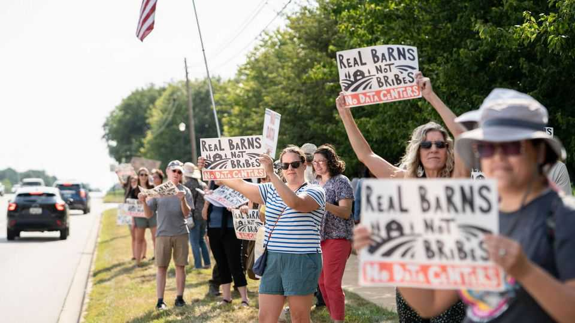
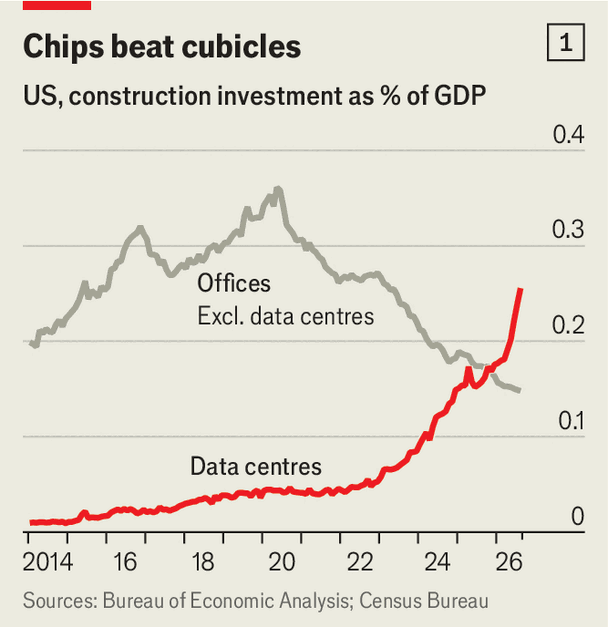
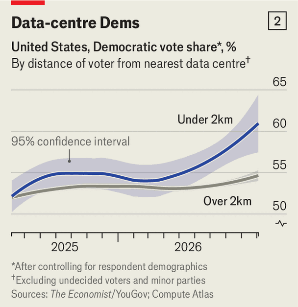
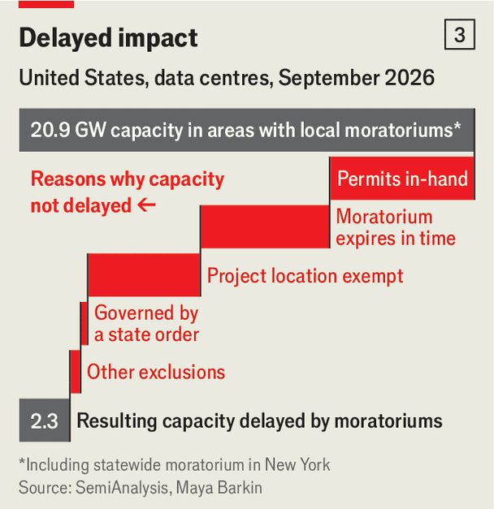

The impact of data-centre discontent
Democrats are capitalising on voters’ anxiety

Oct 15th 2026
To spot the site of a new data centre, look for the cranes. About a dozen soar over the fields of Saline township, Michigan, visible for miles around. Another hint is the convoy of cement-mixers trundling down the road, loudly and constantly. When the OpenAI and Oracle project in Saline, “The Barn”, is finished, it will consume more power than a midsize city.
Beside it is the Rustic Glen Golf Club, where a few locals are enthusiastic about the project. “They’ve been talking to us, and they’re going to do a lot of nice things for us,” says a cashier. The data-centre developers have bought the club and have promised to inject cash. Fred, a farmer standing atop a tractor across the road, offers a more typical reaction: “There’s nothing good I can say about it…that was a beautiful piece of farmland, and they destroyed it.” Drinkers at a nearby brewery say the same, a little more politely, and grouse that the golfers were paid off.

Across America, data centres are popping up at startling speed. Since last November more money has been spent building data centres—not including the expensive chips inside them—than new offices (see chart 1). President Donald Trump has warned that places opposed to data centres risk becoming “backwards and poor”, but Republican candidates are trying to be more attuned to voters like Fred. In Michigan Mike Rogers, a Republican Senate candidate, supports a pause on building. Such moves may be too late. Our analysis of polling data suggests that, as anxiety over data centres grows, the projects seem to be pushing voters towards Democrats.

We matched almost 150,000 respondents from the Economist/YouGov weekly survey with their nearest data centre, using Compute Atlas, an open-source repository of such sites. Voters across the country are shifting towards Democrats, but for those living within 2km of a data centre the veer has been even sharper. Americans who live near a data-centre site are around six percentage points more likely to support the Democrats than those who live further away (see chart 2). Six months ago there was no such difference.
For Brandon, who is circulating a petition against data centres in Ohio, the issue has turned him from a Republican into a swing voter. Local Republicans refused to help his cause, he says, but “the Democrats have been amazing.” Michigan and Ohio are already home to more local moratoriums than any other states.

Why have data centres caught fire politically? Throughout dozens of conversations, voters seldom brought up AI-related concerns directly. The most common fears were practical ones, about water pollution, higher electricity bills or a hit to house prices. Neither politicians’ promises that the projects will pay their own way nor developers’ efforts to bat away concerns with cash seem to have done much good. Whatever the truth is, practical assurances count for little when voters so deeply distrust both government and big businesses: confidence in each is near 50-year lows.
The real-world effect of all that opposition has, so far, been limited. Maya Barkin of SemiAnalysis, a research firm, finds that only 2.3 gigawatts’ worth of projects are likely to be delayed by moratoriums (see chart 3). But with discontent growing, the political impact is more assured. ■
Stay on top of American politics with The US in brief, our daily newsletter with fast analysis of the most important political news, and Checks and Balance, a weekly note that examines the state of American democracy and the issues that matter to voters.